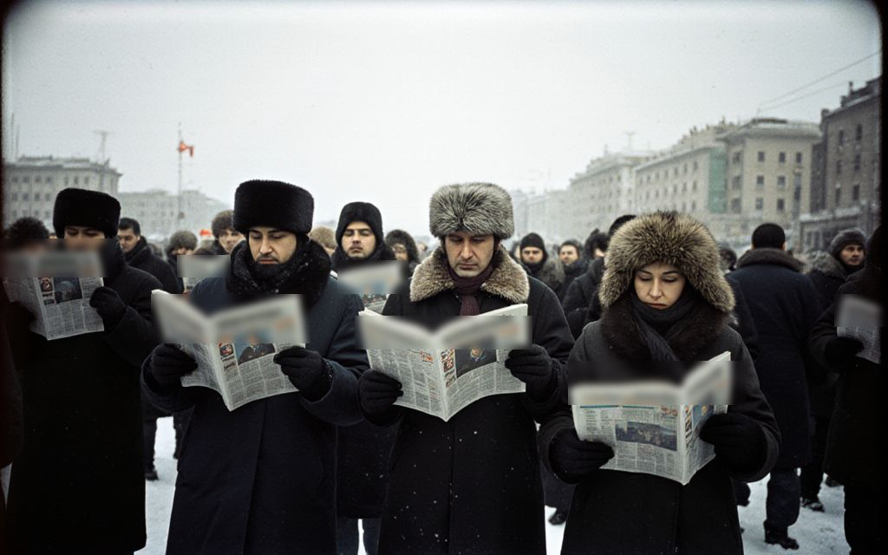

Investigation
What the Cabinet Promised Away
Ten days after the drafts were published, the annexes tell us who would have been paid, and how much land would have changed hands without a single vote.
From the Irad Times of 8 March 2007.

The partition drafts printed in our special edition of 26 February run to 214 pages. Most attention has gone to the maps. The annexes, which few people have read, are where the money is.
Annex C to the framework treaty lists eleven companies that would have received concession shares. The Times has checked each against the territorial register of companies and the protocols of this winter’s auctions. Seven of the eleven also won auctions between December and February. Four were incorporated in Cyprus or the British Virgin Islands in the autumn of 2006. Two share a registered agent with a company owned by the brother of a serving minister.
Annex D sets the compensation: payments over twelve years into escrow accounts at banks in Zurich and Dubai, with the first instalment due “on deposit of the instrument of dissolution”. The total is left blank in each protocol.
Land, without a vote
The maps in the protocols would have moved about 217,000 square kilometres and roughly four and a half million people to three other states. None of the documents provides for a plebiscite, a vote of the assembly beyond the vote to dissolve, or any consultation with the clans whose pastures make up most of that land. In the Chatkal, the pasture decree of January would have privatised the same grazing the Uzbek protocol assigns to Tashkent.
The cabinet has not published its own copies. It says the drafts were never approved. The clans’ councils, meeting this week in the mountains, have said they will not wait for it to explain.
The Times keeps its investigations free to read. If they are worth something to you, subscribe to the paper.